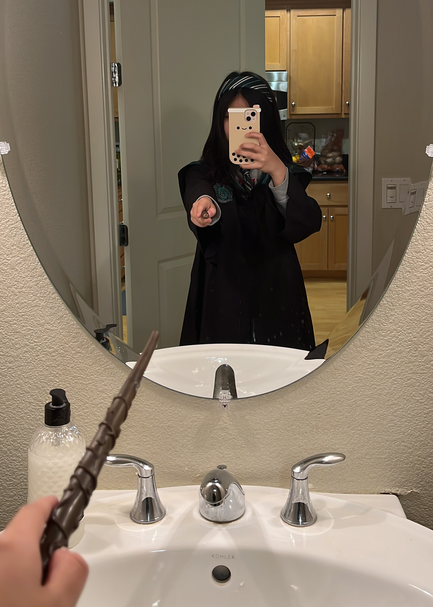

Nadya Leong |
|
|  |
SummaryI am a 33 year old Professional Web Developer who has worked for many different companies such as Wizarding Birthday Association, The Daily Profit, and Loopside Cafe. Through my past jobs, I have gained experience in writing, editing, crocheting, coding HTML, and reading. I have helped to work on many projects, including organizing famous defeater of the Dark Lord Harry Potter's 11th birthday party. Education
|
Work Experience
|
Reviews"I was quite suspicious of Nadya when she first made the offer to work on young Mr Potter's birthday invite, but it turned out that I was terribly wrong with my assumptions about her. She is an incredible witch and had produced the most stunning birthday invitation I have ever seen. You would not believe how many people turned up that day! It was unbelievable! Even with my magical eye, I was still unable to ensure that Harry was completely safe. If it wasn't for Albus Dumbledore, I would've cancelled the party right there, that's how good the invite was." "Nadya was the perfect Web Developer for this job. I cannot imagine why so many of us still believe that witches and wizards born to Muggle parents are any less gifted than those born of Wizarding parents, hence I will never stop giving opportunities to highly talented and skillful wizards because they were not born Pure Blooded. I believe that we should not judge someone for the way they were born; instead, we should open our eyes and appreciate their beauty." "Nadya knows Harry Potter better than even I do. It was all quite simple, really, making his first day at Hogwarts a truly magical one. Though I am known for my high standards, she completely blew me away with that lovely birthday invite. At first, I was slightly worried that Harry wouldn't make any friends in school. I thought he'd be very nervous, poor boy, what with all the staring, but Nadya organized the party so well and made him feel right at home with the rest of the students in his House before the year had even started. I am ever grateful to her and look forward to working with her again." |
Skills
Awards and Certifications
Other |